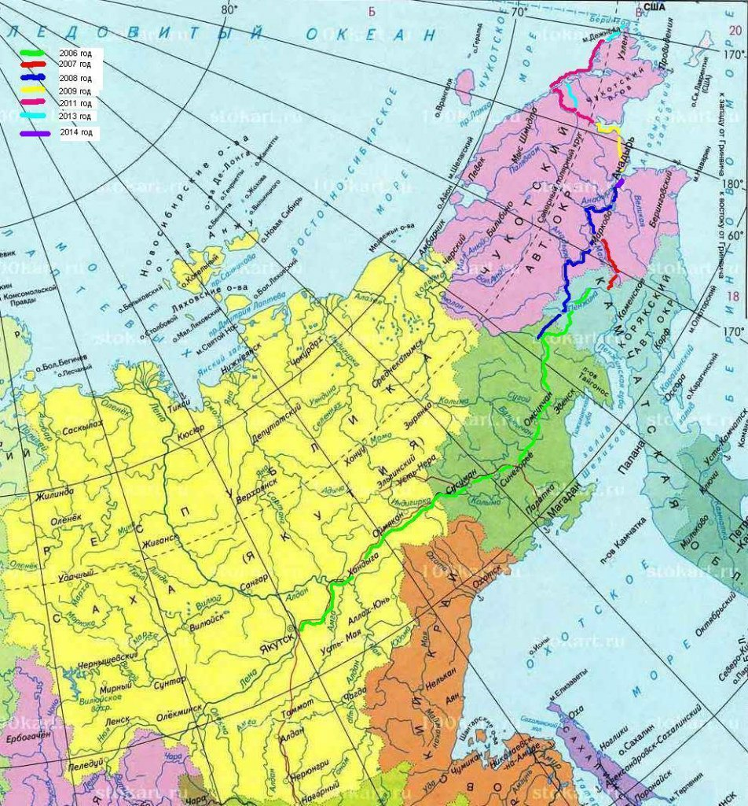

[1] MotoSyberia Reactivation
[2] List of expeditions to Chukotka

Legend:
The route:
- river over Kolyma river (Seymchan-Aniusk (dark blue)
- river Evgekinot - Anadyr (pink)
- Kamaz on river Wiliga - Mierenga-Nic (khaki)
The rest is from GPS track.
Route MotoSyberia Reactivation 2009:
-start from z PL (27.06.2009)
Plan A: Magadan (05.07.2009), Omsukchan, Galimnyj, Merenga, rz.Wiliga, rz.Szirokaja, Tavatum, rz.Stubnaja, Tavatum, rz.Szirokaja, Magadan (29.07.2009)
Plan B: Magadan (31.07.2009), Sejmczan, Zyrianka, Sredniokolymsk, Aniusk, Bilibino (13.08.2009), Kupol baza, Most Paliawam, Genia Meteo, Artel Sasza, Walunistyj, Evgekinot, Anadyr (24.08.2009)
Go home: Moskwa, home PL (27.08.2009)
Back to top
Summer - south route
2009 - [PL] MotoSyberia. transport: 2 x KTMEXC400. trasa: Omsukchan, Merenga, Tavatum, rz.Stubnaja. Grzechu statkiem z Szirokiej do Evenska doplynal.
???? - [CZ] lokalesi opowiadali nam o Czechach ktorzy "stopem" tedy jechali; na pewno z rybakami do Szerokiej, potem statkiem do Evenska i prawdopodobnie wiezdochodem do Paren, moze dalej.
???? - [RU] koles z Jakucka. transport: rower+lodka. trasa: Omsukchan, Galimnyy, Kupol.... Chukotka
Summer - north route
2009 - [PL] MotoSyberia. transport: 2 x KTMEXC400. trasa: j.w.
2009 - [PL] MotoGryf. transport: 3 x Yamaha TTR. trasa: splyniecie Kolyma do Aniuska, na kolach do Evgekinot i statkiem do Anadyru. www: motogryf.pl
2009 - [RU] Motocyklista z Anadyru (wlasciciel sexshopu): Evgekinot-Pevek
2006 - [PL/RU] TransChukotka - na rowerach z Evgekinot to Pevek
Winter - south route
2008 - [RU] [wiosna] Rosjanie z Kamczatki do Madanadu
???? - [RU] motocyklista z Magadanu byl w ekipie ktora zrobila kolko (Anadyr-Magadan-Kolyma-Anadyr) na skuterach snieznych
Winter - north route
2000 - [UK] ...Chersky, Bilibino, Pevek, Mys Schmidta, Lavrentiya. www: www.bbc.co.uk/dna/h2g2/A419438
???? - [JAP] Japonczyk zima na rowerze!
2006 - [RU] Alexey Mikhailov & ekipa. transport: Ford-y na gasienicach, trasa: ...Chersky, Bilibino, Evgekinot, Anadyr. www: moscow-chukotka.com
2007 - [RU] Juri Bulanow & ekipa. transport: GAZ-66. trasa: ...Chersky, Pevek, Mys Schmidt. www: sever66.ru
2008 - [PL/RU] Koperski & ekipa. transport: MAN. trasa: zimnikiem przez Czerski, Bilibino, Pevek do Evgekinot i nazad. www: ekspedycjastulecia.pl.
Z calym szacunkiem do R.Koperskiego sa duze watpliwosci dokad dotarla ekspedycjastulecia.pl. Wg naszych informacji
(ktore otrzymalismy na miejscu) dojechali oni do Evgekinot. W relacjach R.Koperskiego pojawiaja sie czasami w opisie informacje ze dojechali do Uelen, a najczesciej wystepuje
slowo "krance Polwyspu Czukockiego". Do Evgekinot prowadzi zimnik i jest wtedy stosunkowo "duzy" ruch. Do Mys Schmidta rowniez mozna dojechac zimnikiem.
Dojazd do Uelen to zupelnie inna bajka.
2008 - [PL] Pawe Strzechowski. transport: Volvo. trasa: zimnikiem przez Czerski, Bilibino do Pevek. www: ekspedycja2008.pl
Update 2023 from Richard Lionheart
2018 - bikerafting trip from Richard Lionheart
www.lonelytraveller.de/tschukotka/tschukotkaF.html
About the Yakut: His name is Njurgun Efremov. He contacted me in advance of my trip when he found out about my plan. Very interesting person. His father was an ultramarathon runner who wanted to run from Magadan to Uelen (Bering Strait) in 2000, but then got lost behind Omsukchan. He was never found, only his shoes. Njurgun followed his planned route, in several stages by bike and folding kayak. 2006-2013 he managed the distance from Yakutsk to the Bering Strait in five summers each of two months. He never wrote about it. There are only a few photos on his VK profile: vk.com/nyurgun75

The name of Japanese winter cyclist is Hiromasa Andow. In 2005 (Feb to May) he went the Arktika Zimnik from Oymyakon via Zyryanka to Chersky and then followed the winter road via Bilibino and Pevek to Egvekinot, arriving in mid-May. When I was in Oymyakon in 2007, the local meteorologist told me about him and showed me a business card. Without that hint I probably would never have found his page: www.tim.hi-ho.ne.jp/.../fareastenglishreport.html
Back to top